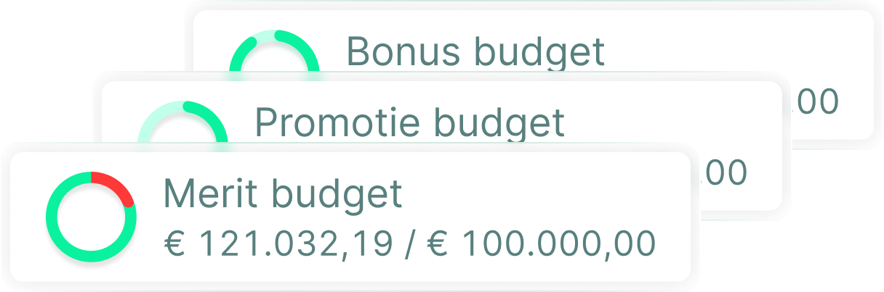
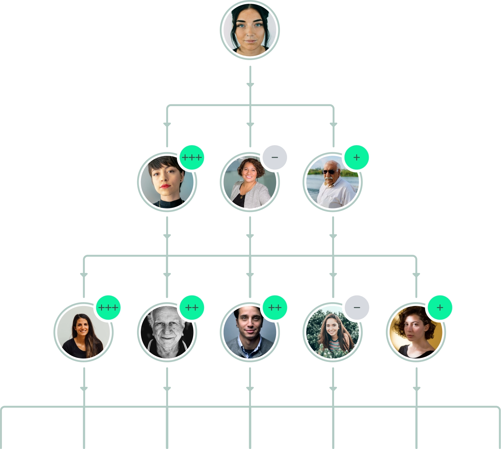

Loonronde · België
Je loonronde in drie weken, niet in twee maanden.
Compensatie zonder kopzorgen — en achteraf kun je elke individuele beslissing uitleggen.
SD Worx: van ruim twee maanden naar drie weken, voor 7.000 medewerkers in 18 landen.
Youbo is de Belgische tool waarin je hele loonronde loopt: budget, verdeling, kalibratie, goedkeuring en de brief aan de medewerker. Geen bestanden meer om samen te voegen.
Dertig minuten, met Bart De Nil. Je ziet je eigen loonregels in de tool. Vrijblijvend.
Vier werkgevers in België voeren hun loonronde in Youbo — van 370 tot 7.000 medewerkers.
-

7.000 medewerkers · hr-dienstverlening
-

4.500 medewerkers · media
-

370 medewerkers · chemie
-

450 bedienden · bouw en infrastructuur
01
Het probleem
Zo ziet januari eruit.
Je bouwt een masterbestand. Je splitst het per afdeling. Je stuurt het rond. Je herinnert elf leidinggevenden. Je krijgt het terug in vier verschillende formaten. Je voegt samen. Je stelt vast dat het budget drie procent over is. Je herrekent. Je stuurt opnieuw. En dan begin je aan de brieven.
Bij Kaneka Belgium waren dat 27 afdelingen en een loonbeleid met vijftig jaar geschiedenis. Bij SD Worx achttien landen met elk hun eigen indexatieregels en elk hun eigen moment in het jaar — België in april, het Verenigd Koninkrijk in juni, Noorwegen in juli. Bij Aertssen Group, in de woorden van hun compensation & benefits manager: aparte documenten per afdeling, die nadien opnieuw moesten worden samengevoegd. Tijdrovend en foutgevoelig.
Wat er dan misloopt, is zelden spectaculair. Een formule die één rij te ver is gekopieerd. Een bestand van vorig jaar dat als sjabloon dienstdoet. Een budget dat pas bij het samenvoegen blijkt te zijn overschreden, twee dagen voor de deadline. Pieter-Jan Boden van SD Worx: de datakwaliteit leed eronder, en in één land kun je fouten manueel rechtzetten, maar in een internationale context is dat een enorme taak.
En er is een tweede risico dat je zelden hardop hoort. Eén persoon begrijpt het bestand. Bij DPG Media was dat letterlijk zo: het rewardproces zat jarenlang in handen van een specialist die er een eigen systeem van spreadsheets en scripts omheen had gebouwd. Toen die persoon vertrok, vertrok het proces mee.
“Waar hr-medewerkers voorheen makkelijk twee weken bezig waren met het opstellen van de spreadsheets, duurt dit nu hooguit twee dagen.”
Mieke Catthoor
Compensation & Benefits Manager BeNe, DPG Media
Schermbeeld I
De loonronde van één afdeling, halverwege.
Links de medewerkers van de afdeling, met per persoon het voorstel voor loonsverhoging, bonus en promotie. Bovenaan twee budgetmeters — index en promotie — die meebewegen terwijl de leidinggevende verdeelt, en een teller die toont hoeveel medewerkers al behandeld zijn. Rechts één medewerker in detail: de verhoging, de evaluatie, de discretionaire bonus, en de vraag die de leidinggevende aan hr stelde.

02
De cijfers
Wat het bij hen deed.
Vier bedrijven, vier cijfers, elk door de klant zelf genoemd. Ze staan hier voluit omdat ze de enige belofte zijn die deze pagina doet.
-
SD Worx
7.000 medewerkers · 18 landen
Van twee maanden naar drie weken
De hr-dienstverlener liet de loonronde eerst los op de Belgische populatie en breidde daarna uit naar alle achttien landen. Doorlooptijd van de volledige cyclus: amper drie weken, waar het vroeger ruim twee maanden kostte.
-
DPG Media
4.500 medewerkers · 130 leidinggevenden
Zeven keer sneller
Het opzetten van de spreadsheets kostte hr makkelijk twee weken. Nu duurt het hooguit twee dagen. Na de Belgische tak stapten in 2025 ook de ruim 3.000 Nederlandse medewerkers over.
-
Kaneka Belgium
370 medewerkers · 27 afdelingen
Twee werkweken per jaar
Zoveel schat hr te besparen sinds het opsplitsen, consolideren en handmatig controleren van 27 Excel-bestanden wegviel. De volledige opzet — inclusief een loonbeleid met vijftig jaar geschiedenis — nam drie maanden.
-
Aertssen Group
450 bedienden · familiebedrijf
Live in drie maanden
De beslissing viel in september. Begin december stond de tool live, volgens een strak schema van workshops en wekelijkse check-ins. De departementshoofden gingen na een korte opleiding meteen aan de slag.
TODO — nodig van klant. Worden dit vier pdf-downloads (met formulier) of vier casepagina's? De links hierboven wijzen nu naar de bestaande casepagina's en werken in beide scenario's. Er komen mogelijk twee cases bij; deze lijst verdraagt dat zonder herontwerp.

03
Het loonbeleid
Het loonbeleid dat je op papier hebt, ook echt toepassen.
Je loonbeleid staat al ergens opgeschreven. In een reeks workshops zetten we het om in regels die de tool toepast, zodat elke leidinggevende bij het openen van zijn team al een voorstel ziet in plaats van een leeg vak.
Dat is geen generiek model dat je moet overnemen. Kaneka Belgium bracht vijftig jaar gegroeid beleid en 27 afdelingen binnen; SD Worx achttien landen met elk hun eigen indexatiewetgeving. Dit is wat er in de regels terechtkomt:
| Loonvorken | Met compa-ratio per medewerker, zichtbaar voor de leidinggevende |
|---|---|
| Anciënniteit | Baremieke verhogingen en anciënniteitsschalen |
| Indexatie | Per paritair comité, en per land waar dat verschilt |
| Promotieregels | Inclusief functieclassificatie en niveauwissel |
| Evaluatie | De score bepaalt mee het voorstel dat de tool berekent |
| Discretionaire marge | Wat de leidinggevende zelf mag afwijken, en binnen welke grenzen |
De oefening zelf is het halve werk, en klanten zeggen dat het de moeite waard is los van de tool. Marlies Bots van Aertssen Group: je moet je loonbeleid van a tot z onder de loep nemen om het te vertalen, en die oefening helpt om er opnieuw kritisch naar te kijken.
“We hebben al een hr-pakket.”
Aertssen Group ging bewust op zoek naar iets dat er géén deel van uitmaakt. Maxime Van Gestel: “Er zijn genoeg tools op de markt, maar die maken meestal deel uit van een hr-softwarepakket. Wij zochten specifiek een tool puur voor het compensatieproces.” Youbo vervangt je core-hr en je loonpakket niet — het koppelt ermee. Bij Kaneka leest het de loondata in uit eBlox.
Schermbeeld II
Twee medewerkers naast elkaar, met alles wat meetelt.
Brutoloon, flexinkomen, jaarbonus, mobiliteitsbudget, wagen en rewardscore, naast elkaar gezet. Zo ziet een leidinggevende waarom twee mensen die hetzelfde werk doen niet hetzelfde verdienen — of dat er geen reden is, en het verschil dus weg moet.

04
De preview
Ontdek hoe het werkt.
Vijf schermen uit een echte cyclus, in je eigen tempo. Dit is de preview — geen video die je moet uitzitten, geen formulier vooraf. De demo is het gesprek van dertig minuten met Bart, waarin je je eigen loonregels ziet.

Je legt het budget vast en opent de cyclus.
Eén budget voor indexatie, één voor promoties, één voor bonussen — of de opdeling die jouw beleid gebruikt. Vanaf hier weet iedereen die verdeelt hoeveel er is.

Elke leidinggevende krijgt enkel zijn eigen team.
Geen bestand dat rondgaat. De structuur van je organisatie zit in de tool, en iedereen ziet precies de mensen en de bedragen waar hij over beslist — en niets daarbuiten.

Het budget beweegt mee terwijl er verdeeld wordt.
Jij ziet wie al klaar is en wie nog niet. Als een leidinggevende zijn budget overschrijdt, kleurt het cijfer rood. Maxime Van Gestel van Aertssen Group: “Het is een kleine feature, maar erg handig.”

Kalibreren en goedkeuren, zonder samen te voegen.
Er is niets meer om samen te voegen: alles zit al in hetzelfde systeem. Hr kalibreert over de afdelingen heen, de directie keurt goed, en de nieuwe pakketten gaan naar je loonpakket.

De medewerker ziet zijn eigen pakket, jaar na jaar.
En de loon-, bonus- en loonsverhogingbrieven worden automatisch correct ingevuld — bij Kaneka was net dat overtypen het werk dat verdween.
Wil je dit met je eigen loonvorken en je eigen afdelingen zien? Vraag een demo aan.
05
De leidinggevenden
Ze openen het één keer per jaar. Dus moet het meteen duidelijk zijn.
Dit is de stille reden waarom zulke projecten stranden: vijftig tot honderddertig afdelingshoofden moeten iets gebruiken dat ze sinds vorig jaar vergeten zijn, onder tijdsdruk, naast hun echte werk.
Bij Kaneka Belgium kregen alle managers samen één opleidingssessie van een uur. Bij Aertssen Group was er geen handleiding en waren er nauwelijks vragen. Bij DPG Media werken vandaag 130 leidinggevenden ermee en noemen ze de tool overzichtelijk.
“Als je met een computer kunt werken, kun je met Youbo overweg. Je hoeft geen dikke handleiding te doorploegen.”
Marlies Bots
Compensation & Benefits Manager, Aertssen Group
Wat ze zien is geen leeg vak maar een voorstel, berekend op jouw regels. Ze zien de loonvork van elke medewerker, de anciënniteit, wat er nog in het budget zit, en hoe hun eigen toekenningen zich verhouden tot die van andere afdelingen. Geven ze structureel hogere bonussen dan gemiddeld? Dat staat er gewoon.
06
De invoering
Dit wordt geen project van een jaar.
| Aertssen Group | Beslissing in september, live begin december. Drie maanden. |
|---|---|
| Kaneka Belgium | Drie maanden tot volledig operationeel. De eerste cyclus werd afgerond zonder enig issue van betekenis. |
| DPG Media | Eerst België, daarna Nederland. Workshops vertaalden de loonstructuren; daarna was de tool klaar. |
Het echte werk zit in de workshops waarin je loonbeleid regels wordt. Daarna is het configuratie. Belgische loonrondes lopen doorgaans van januari tot april, dus als je klaar wil zijn voor de cyclus van volgend jaar, is september tot november het moment om te beslissen.
“Loondata in de cloud — is dat wel verstandig?”
Youbo is ISO 27001-gecertificeerd en GDPR-conform. Elke leidinggevende ziet enkel het budget en de gegevens van zijn eigen team, en elke toegang en elke wijziging wordt gelogd. Zet dat naast het alternatief: een Excel-bestand met een wachtwoord erop. Wachtwoorden worden doorgegeven — dat is de reden die SD Worx zelf opgaf.

07
De uitleg
De cijfers waarop je in 2027 rapporteert, maak je in 2026.
Even nuchter, want hierover wordt veel onzin verkocht.
Wat vandaag al geldt in België
Heb je vijftig of meer werknemers, dan maak je om de twee jaar een analyseverslag van de bezoldigingsstructuur voor de ondernemingsraad, opgesplitst naar geslacht, anciënniteit, opleidingsniveau en functieniveau. Dat is de loonkloofwet van 22 april 2012, en die staat er al meer dan tien jaar. CAO nr. 25ter vraagt daarnaast dat je functieclassificatie sekseneutraal is.
Daar komt de rekenkunde bij. De loonnorm staat op 0% voor 2025–2026. Indexatie, anciënniteitsverhogingen en promoties vallen daarbuiten, PC 200 indexeerde op 1 januari 2026 met 2,21%, en vanaf 1 januari 2027 geldt de centenindex. De discretionaire marge is dus structureel bijna nul, en elke verhoging moet in een uitgezonderde categorie passen. Je moet kunnen tonen in welke.
Wat vandaag níét geldt
De Europese loontransparantierichtlijn is in België niet omgezet voor de privésector. De omzettingsdeadline van 7 juni 2026 is gepasseerd, de gesprekken in de Nationale Arbeidsraad liepen in april 2026 vast, en je sociaal secretariaat heeft je dat waarschijnlijk al schriftelijk gemeld. Wij gaan je niet vertellen dat de wet je vandaag iets verplicht dat ze niet verplicht.
Wat wél zeker is
Het eerste loonkloofrapport voor werkgevers vanaf 250 medewerkers wordt verwacht tegen 7 juni 2027, en het rapporteert over het voorafgaande kalenderjaar. Dat is dus 2026: de verhogingen die je nu toekent. En als je een verschil niet kunt verantwoorden met objectieve, sekseneutrale criteria, verschuift de bewijslast naar jou als werkgever.
Daarvoor heb je geen wet nodig, maar een dossier. Youbo houdt per beslissing bij wie ze nam, wanneer, en op welke regel ze gebaseerd was — niet als extra werk achteraf, maar als bijproduct van de cyclus die je toch al draait.
“Je hebt altijd zicht op wie welke loonsverhogingen en bonussen heeft toegekend. Aanpassingen worden vermeld met datum en verantwoordelijke, tot op het detailniveau. Dat vermijdt discussies achteraf.”
Marlies Bots
Compensation & Benefits Manager, Aertssen Group
Danny Haneveer, compensation & benefits manager bij Kaneka Belgium, over de loonkloofanalyse in de tool: “Die laat zien wat de loonkloof is, en welke verschillen er statistisch verklaarbaar zijn.”
DPG Media publiceerde zijn eigen cijfer: een loonkloof van 1,9%, met de uitgesproken ambitie om die binnen enkele jaren volledig weg te werken.
Schermbeeld III
Wat je overhoudt na de cyclus.
Het loonpakket van één medewerker: oud, nieuw, verschil. Daaronder de functieclassificatie voor en na, met HAY-niveau en senioriteitsgraad. Dit is het stuk dat je meeneemt naar het gesprek met de medewerker — en, als het ooit gevraagd wordt, naar de ondernemingsraad.

Maak van verlonen het positieve proces dat het hoort te zijn.
Die zin is niet van ons. Pieter-Jan Boden, People Director bij SD Worx, zei het zo: “Verlonen is nu eindelijk het positieve proces dat het hoort te zijn.”
08
De vraag
Vraag een demo aan.
Dertig minuten, met Bart De Nil. Hij zet je eigen loonregels in de tool en toont wat er dan gebeurt — geen demo-omgeving met verzonnen namen en dollarbedragen. Vrijblijvend.

Bart De Nil
Reward expert, Teal Partners
Bart geeft de demo's zelf. Hij belt je terug op het nummer of het adres dat je hier achterlaat — er zit geen callcenter tussen.
“Toen ik een demo zag, wist ik: hier hebben we op gewacht.”
Bart Verhoeven
HR & General Affairs Manager, Kaneka Belgium
Bedankt, je aanvraag staat genoteerd.
Bart De Nil neemt binnen twee werkdagen contact op om een moment te prikken. In dat gesprek van dertig minuten zet hij je eigen loonregels in de tool — breng gerust je loonvorken en je afdelingsstructuur mee.
Niets gehoord? Bel of mail hem gerust rechtstreeks op +32 476 96 33 40.
Liever meteen een moment prikken?
Boek zelf een halfuur in Barts agenda. Dertig minuten, vrijblijvend, geen voorbereiding nodig.
Plan een halfuur met BartTODO — nodig van klant. De boekbare agendalink van Bart (Calendly, Microsoft Bookings of Teams). Zolang die er niet is, wijst deze knop naar het formulier hierboven.
09
Vragen
Wat mensen vragen voor ze bellen.
Je hele loonronde loopt in één systeem, van budget tot brief. Hr legt het budget vast en opent de cyclus. Elke leidinggevende ziet enkel zijn eigen team, met per medewerker een voorstel dat de tool berekent op basis van jouw loonregels — loonvork, anciënniteit, evaluatie, indexatie. Hij past aan waar hij wil, ziet het budget meebewegen en dient in. Hr kalibreert over de afdelingen heen, de directie keurt goed, en de nieuwe pakketten gaan naar je loonpakket. De loon-, bonus- en loonsverhogingbrieven worden automatisch ingevuld.
Drie maanden, van beslissing tot live. Bij Aertssen Group viel de beslissing in september en stond de tool begin december live. Bij Kaneka Belgium duurde het eveneens drie maanden, inclusief het vertalen van een loonbeleid met vijftig jaar geschiedenis over 27 afdelingen. Het werk zit in de workshops waarin je loonbeleid regels wordt; daarna is het configuratie. Wil je klaar zijn voor de cyclus van volgend jaar, reken dan op drie maanden en beslis tussen september en november.
Voor werkgevers met ruwweg 300 tot 7.000 bedienden die hun loonronde vandaag in Excel doen. De vier bedrijven die er nu mee werken zitten tussen 370 en 7.000 medewerkers, in chemie, media, bouw en hr-dienstverlening. Doorslaggevend is niet je omvang maar je aantal beslissers: zodra meerdere leidinggevenden budget verdelen en jij die bestanden moet samenvoegen, verdient de tool zichzelf terug. Doe je de loonronde in je eentje voor dertig mensen, dan is Excel waarschijnlijk nog prima.
Er staat geen prijs op deze pagina, en dat is geen verkooptruc. De prijs hangt af van je aantal medewerkers en van hoe complex je loonbeleid is — achttien landen met eigen indexatieregels is nu eenmaal ander werk dan één paritair comité. In het gesprek van dertig minuten krijg je een concrete richtprijs voor jouw situatie, en niet pas na vier weken.
TODO — nodig van klant. Het prijsmodel en een richtprijs, zodat dit antwoord een cijfer kan bevatten. Zwijgen over prijs leest als “duur en ontwijkend”; dit antwoord is het beste dat kan zonder de gegevens.
Nee. Youbo bepaalt de bedragen, je sociaal secretariaat betaalt ze uit. De tool staat naast je core-hr en je loonpakket en koppelt ermee — bij Kaneka Belgium leest Youbo de loondata in uit eBlox. Aertssen Group koos Youbo net omdat het géén onderdeel is van een hr-suite, maar één tool voor één proces.
Nederlands en Engels. Alle schermen op deze pagina zijn de Nederlandstalige versie, precies zoals je leidinggevenden ze te zien krijgen. SD Worx gebruikt de tool in achttien landen, dus meertalig werken is voorzien.
TODO — nodig van klant. Bestaat er een Franstalige interface, en zo nee, staat die op de roadmap? Voor een Belgische markt is dat een go/no-go vóór de campagne buiten Vlaanderen gaat.
Teal Partners, een Belgisch bedrijf uit Antwerpen, met SD Worx als meerderheidsaandeelhouder. Dat laatste zeggen we er meteen bij, want het is tegelijk de sterkste referentie die we hebben: SD Worx voert zijn eigen loonronde voor 7.000 medewerkers in 18 landen in Youbo, terwijl ze de software ook zelf hadden kunnen bouwen. Je hoeft geen klant van SD Worx te zijn — Youbo koppelt met het loonpakket dat je al gebruikt.
Colofon
Youbo is een product van Teal Partners.
Teal Partners BV, Damplein 23, 2060 Antwerpen, ondernemingsnummer 0642.824.542. Meerderheidsaandeelhouder: SD Worx, dat Youbo ook zelf gebruikt. Vier referentieklanten staan met naam op deze pagina en hun cases zijn integraal na te lezen.